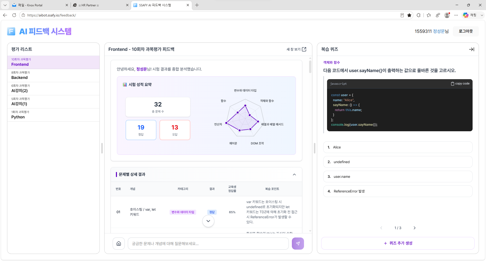
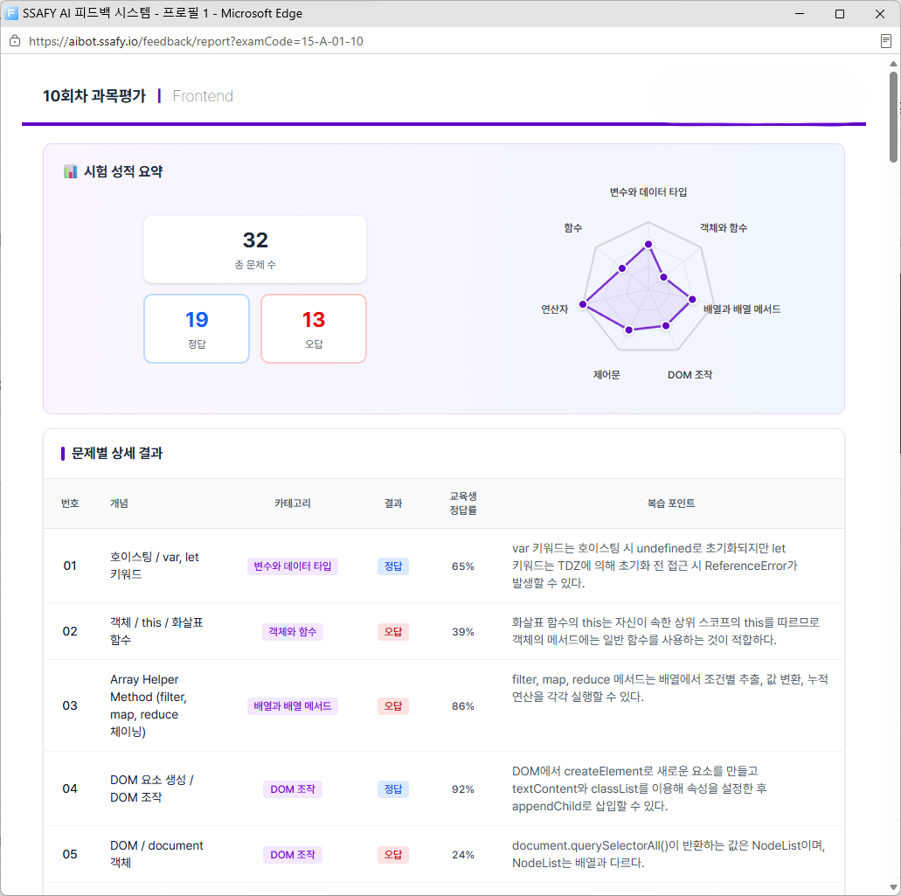
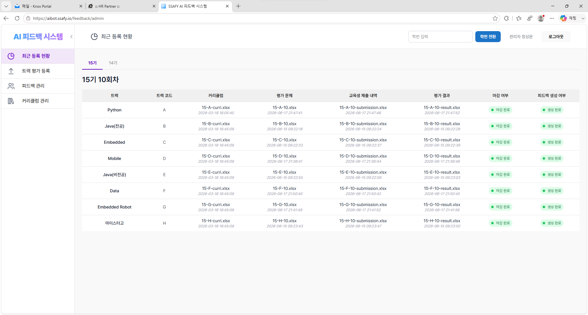

SSAFY AI 피드백 시스템
RUNNING · aibot.ssafy.io 멀티캠퍼스 · 1인 기획/개발/운영과목평가가 끝나면 답안을 LLM이 채점하고, 개념별로 어디가 약한지 진단해 복습 퀴즈와 튜터 챗봇을 만들어 줍니다.
PROBLEM
900명의 코딩·서술형 답안을 강사가 손으로 채점하면 결과가 나오기까지 며칠이 걸렸고, 개인별 피드백은 엄두를 내지 못했습니다.SOLUTION
제출 즉시 LLM이 루브릭에 맞춰 채점하고, 취약 개념 리포트와 복습 퀴즈, 튜터 챗봇을 자동으로 만들어 교육생 전원에게 돌려줍니다.HOW IT WORKS — 시험 종료부터 복습까지 5단계
답안 수집·파싱코딩·서술형 답안을 문항 단위로 자동 분리
비동기 큐잉900명이 동시에 제출해도 큐로 분산해 안정적으로 처리
LLM 자동 채점루브릭 기반 채점과 누락 개념 태깅
개인 리포트개념별 이해도 레이더 차트와 보완 로드맵
맞춤 복습틀린 개념만 겨냥한 퀴즈와 튜터 챗봇
4,700+누적 리포트 발행
47회평가 회차 · 15기 8개 트랙
즉시시험 직후 채점·피드백
1인기획 · 개발 · 배포 · 운영
LLM APIFastAPI
ReactMongoDB비동기 큐잉
프롬프트 설계 & 평가


